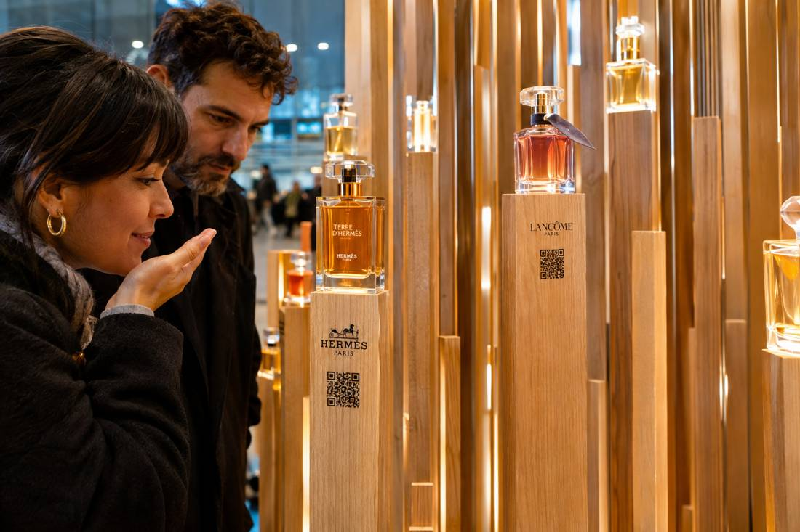
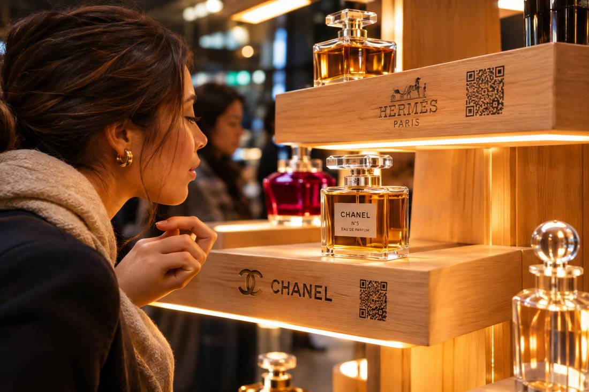
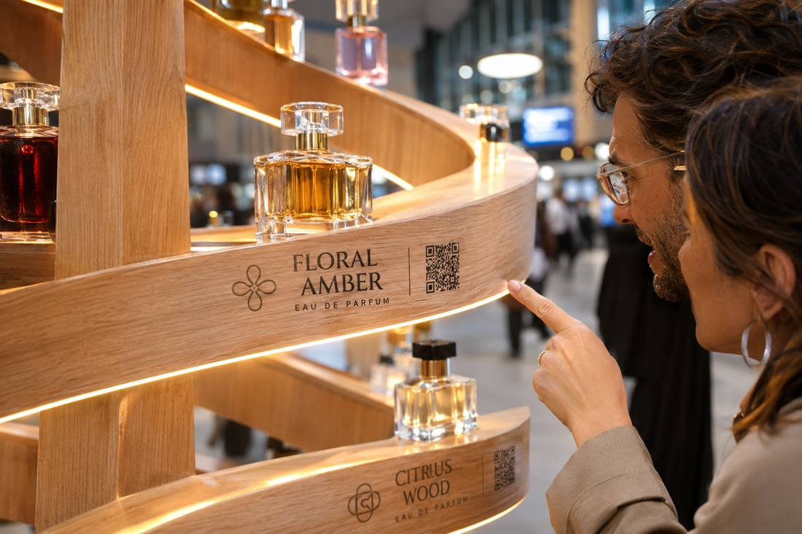
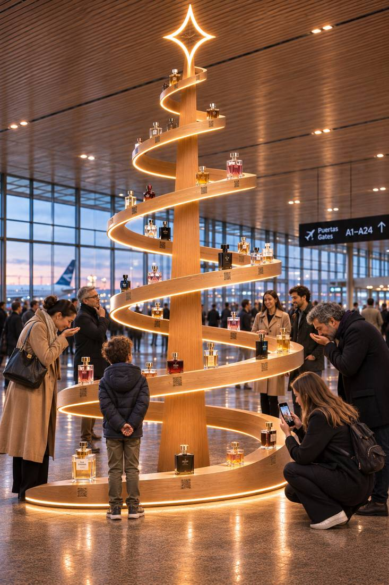
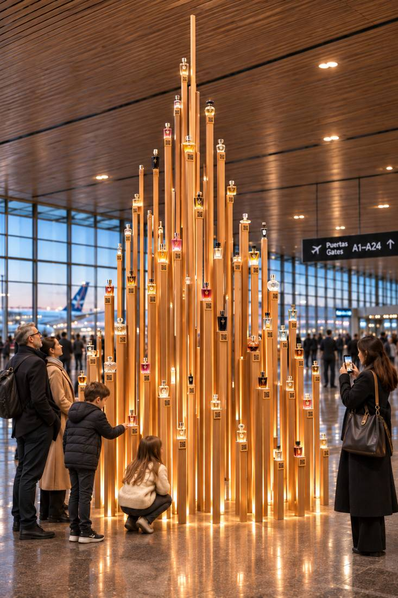
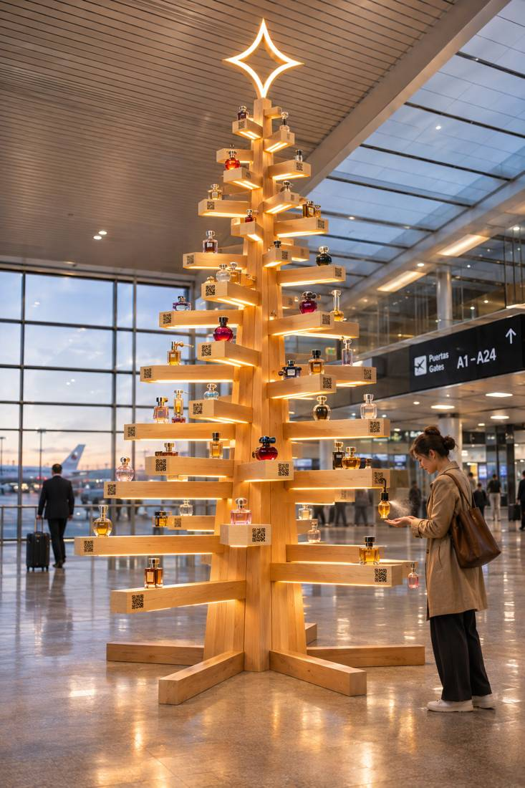

Navidad huele a vos. Una escultura en madera de guatambú que invita a recorrer los aromas de la casa.

Plano detalle entre los listones⤢El pino, las mandarinas, el pan dulce, la casa de la abuela: lo primero que nos devuelve a diciembre es un olor. Por eso el árbol de este año no se mira: se huele.
Un árbol de 5 a 6 metros en el sector de partidas. Cada rama principal tiene su propio aroma y su propia identidad. El que pasa lo recorre, prueba, elige la suya y se la lleva.

El frasco como adorno · QR grabado en el canto⤢Construido esencialmente en madera de guatambú, de veta clara y pareja, que resalta la calidez del material. La paleta se mueve en la línea de los dorados: luz cálida en los cantos, grabados en tono bronce y los propios frascos, ámbar y miel, como puntos de color.
Una propuesta escultórica que resalta por sí misma en el espacio y propone en su seno una visita por las fragancias. Los perfumes son los adornos: van fijados a la madera; no se pueden extraer, pero sí se pueden usar.

Grabado láser en bronce · luz en el canto⤢Guatambú macizo, cantos con luz, grabado, frascos fijados. La estructura cambia; el lenguaje es el mismo.

I · Espiral⤢Una cinta continua asciende alrededor de un mástil hasta una estrella de luz. Los frascos se apoyan sobre la cinta; nombre y QR grabados al frente. La más icónica y fotogénica.

II · Listones verticales⤢Decenas de listones de alturas escalonadas forman el cono de un pino por acumulación. Cada listón termina en un frasco iluminado. Se entra entre ellos: inmersiva, con el aroma contenido.

III · Listones horizontales⤢Tronco central con tablas cruzadas de largo decreciente, al modo nórdico. Cada tabla es un estante con luz inferior. La más liviana y modular; accesible para chicos y adultos.
En las tres familias el lenguaje es idéntico: madera clara al natural, grabado láser en bronce con el nombre del aroma y su QR, luz cálida escondida en los cantos y el frasco como única nota de color. Las variantes son el mobiliario; la experiencia es la misma.
Las tres familias son puntos de partida, no un catálogo cerrado. El sistema admite formas nuevas a medida del espacio y de la marca: un árbol-pórtico que se atraviesa, una versión colgante, un bosque de pinos pequeños por el sector, o una pieza que combine espiral y listones. Podemos modelar dos o tres alternativas más en una semana con las medidas reales del lugar.
No vende: regala un recuerdo, que es lo que la gente se lleva de viaje. Y aprende algo que nadie sabe: a qué huele la Navidad argentina según miles de viajeros.
Hay regalos que no pesan en la valija. Este año, el árbol te da uno antes de subir al avión.